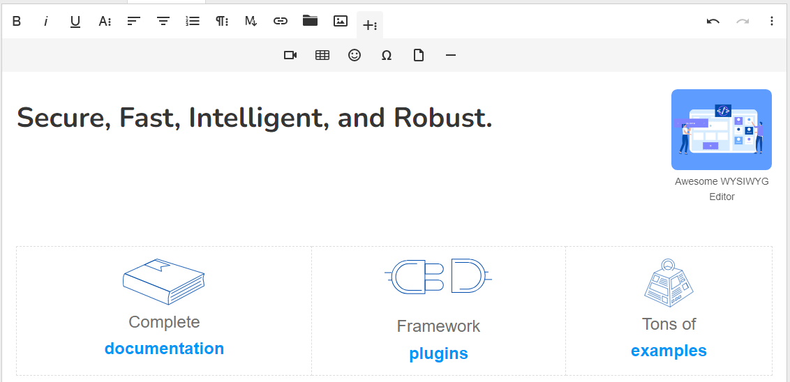
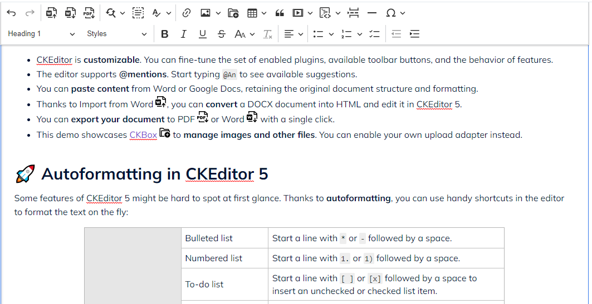
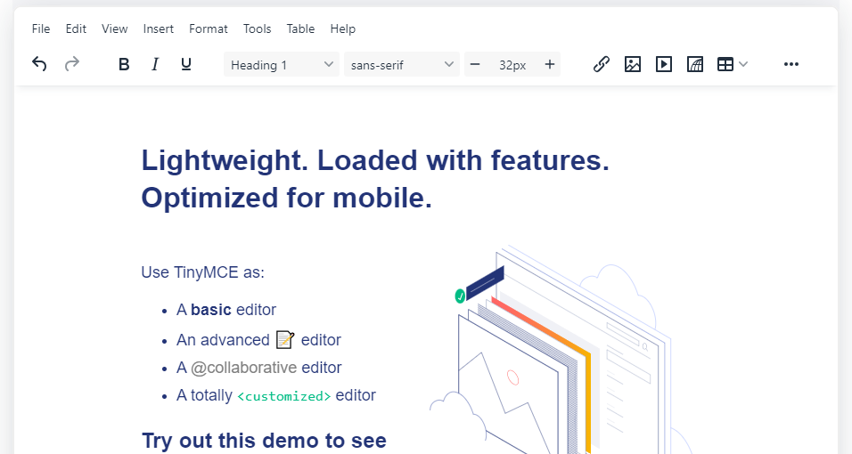
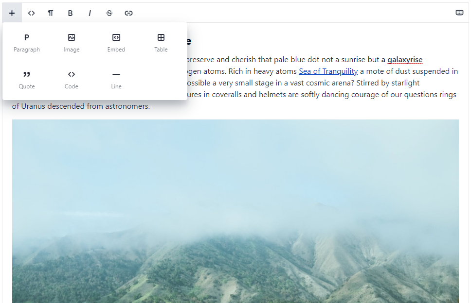

QuillJS Editor (Open Source)
QuillJS
Hello World!
Some initial
bold
text
Summernote Editor (Open Source)
Summernote
Hello, World!
Trix Editor (Open Source)
Trix
Editor.js Editor (Open Source)
Editor.js
Sun Editor (Open Source)
Git Repo - Sun Editor
Hi
Froala Editor
Froala

CKEditor 5
CKEditor

TinyMCE Editor
TinyMCE

Redactor X Editor
Redactor X
